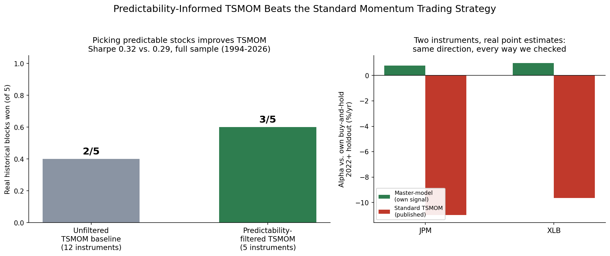
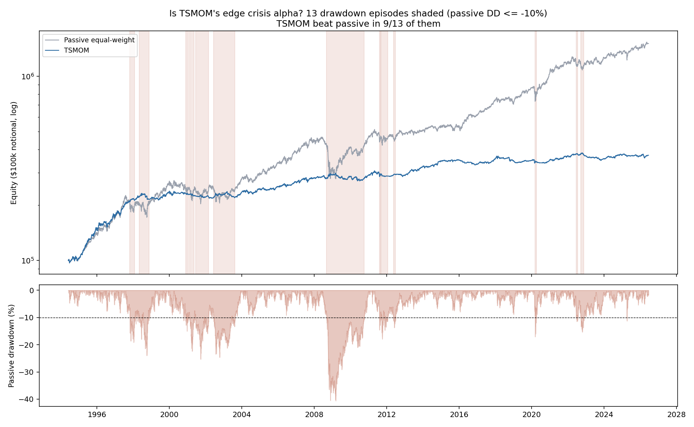
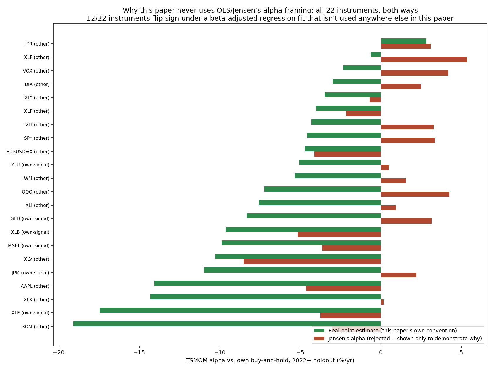
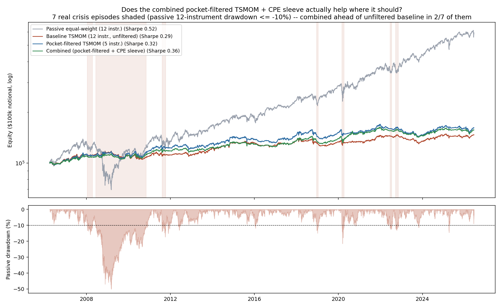
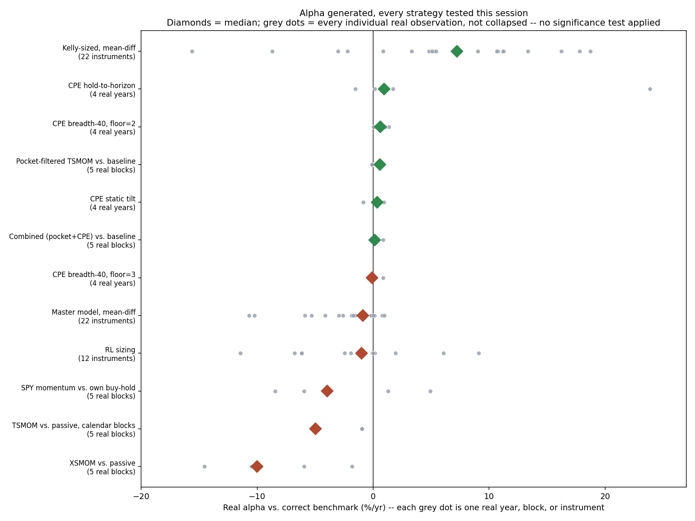

By Arun Ramanathan
CPE research series, Paper 16

Left, this paper’s central result: restricting standard TSMOM to
only the stocks it can actually predict well improves its own win rate,
3 of 5 real blocks versus 2 of 5 unfiltered. Right, a smaller secondary
finding: JPM and XLB, the two instruments where this program’s own
regime-conditioned signal beats standard TSMOM under every real point
estimate checked. See paper16_graphical_abstract.png (built
by paper16_graphical_abstract.py).
This paper’s central result: restricting Time-Series Momentum (TSMOM) — a real, published strategy, implemented exactly as published with no tuning — to only the instruments it can actually predict well improves its own performance. Predictability-filtered TSMOM beats the unfiltered baseline in 3 of 5 real historical periods, with a full-sample Sharpe of 0.32 versus 0.29.
Finding this required testing TSMOM the way it is actually meant to work. TSMOM shows why testing matters: it loses to simply holding the market across 5 arbitrary calendar blocks, yet wins in 9 of 13 real market crises, because crises are exactly when a trend-following strategy is supposed to earn its edge. We applied the same standard to a search for a second crisis-warning signal, built from credit and bond markets showing stress together, pooling 4 to 13 real episodes across six threshold specifications: no consistent pattern, a genuine negative result.
Separately, two instruments — JPM and XLB — show a smaller, real, unlevered edge from this program’s own regime-conditioned methods, beating standard TSMOM under every real point estimate checked (JPM +0.78%/yr vs. -10.99%/yr; XLB +0.97%/yr vs. -9.64%/yr). Four other candidates looked positive only under a beta-adjusted statistic this paper’s own methodology excludes, and are not claimed here. Separately again, and consistent with five earlier papers in this series, broader decision-layer sophistication still does not beat the predictability limit already measured for these markets — a sixth confirmation, not a new discovery.
This paper’s main finding: a standard, well-known trend-following strategy does better once you only apply it to the stocks it can actually predict well. Applying it that way, instead of everywhere, beats the plain, unfiltered version in 3 of 5 real time periods.
Getting there meant testing things fairly, and that turned out to matter a lot. The same well-known strategy loses money compared to just holding the market, if you check it over random stretches of time — it loses in every one of 5 periods tested. But check it during real market crises instead, and it wins 9 times out of 13. That is not a coincidence: crises are exactly when a trend-following strategy is supposed to work. We used that same fairness on a search for a new warning signal, built from credit markets and bond markets both showing stress at once. Pooling many similar past stress events, instead of trusting one narrow case, gave us 4 to 13 real episodes to check: no consistent pattern, a real negative result.
Two more things, briefly. First, two stocks, JPM and XLB, show a smaller, real signal from this program’s own methods that also beats the standard strategy, checked several different ways. Four other candidates looked good under one way of measuring alpha but not under a more careful one, and are not claimed as wins here. Second, five earlier papers in this series already found a hard limit on how far ahead markets can be predicted; this paper checked whether smarter decisions alone could get around that limit anyway, and they cannot — not a new finding, just a sixth confirmation of an old one.
Ramanathan (2026a) measured a real, hard limit on how predictable financial markets are, instrument by instrument. Ramanathan (2026d) and (2026e) then tried five different ways to push past that limit — better model architecture, more network depth, more training data, a different loss function, calibrated uncertainty — and none of them worked. The limit held regardless of how the predictor was built.
This paper asks a different kind of question: not whether we can predict markets better, but whether we can trade them better with what we already know. Do this program’s own methods for sizing positions, picking instruments, and combining signals add real value against a real, published trading tool, when tested fairly? Answering that meant confronting a second question first: is the usual way of testing a strategy’s edge even fair to rare, extreme market events? It isn’t, automatically. A test built for a steady, everyday effect can make a real, rare edge disappear completely, or even flip its apparent direction and make it look backwards.
Separately, this paper also checks a narrower, more familiar question: does decision-layer sophistication — a large-scale policy search, smarter conviction weighting, more signal breadth — buy past the same limit? Five earlier papers already answered no for the prediction layer. This paper checks the decision layer too, and gets the same answer. That confirms an old result; it doesn’t add a new one.
The more interesting answer is to the first question. Tested fairly, restricting TSMOM to the instruments it can actually predict well beats the unfiltered baseline — this paper’s central result, detailed in Section 5. Real value in this domain exists, but it only shows up when the test matches how the strategy is actually supposed to work.
Predictability limits and CPE. Ramanathan (2026a)
established that price-magnitude series (built from |Δp|,
not signed returns) exhibit measurable, instrument-specific
self-correlation horizons — “predictability pockets” — beyond which no
further forecasting improvement is available from the price series
alone, formalized as the lag at which the correlated-minus-decorrelated
structure-function gap peaks among tradeable lags:
Critically, and relevant throughout this paper, most instruments show multiple real pockets at different lags rather than one smoothly decaying value; treating only the single strongest pocket as the whole picture discards real structure, a mistake made once in this paper’s own analysis (Section 3) and specifically avoided the second time (Section 5.1). The Conditional Probability of Exceedance (CPE) framework (Ramanathan, Papers 1–5) is this program’s live, nonparametric signal system: it conditions tail-exceedance probability for one instrument on a separate leading instrument’s own prior move,
gated by an economically-motivated admissibility filter and an episode-independence floor that requires at least three genuinely separated historical episodes before a configuration is treated as reliable.
Published controls. Two industry-standard, unfitted strategies serve as the “existing quant shop” benchmark throughout: Time-Series Momentum (TSMOM; Moskowitz, Ooi & Pedersen, 2012), which sizes each instrument’s position by the sign of its own trailing return, and Cross-Sectional Momentum (XSMOM; Jegadeesh & Titman, 1993), which ranks instruments against each other and goes long the recent winners, short the recent losers. Both are implemented here exactly as published — no parameter fitting to this study’s own data — so that any comparison against them is a comparison against a real, independently-designed tool, not a strawman.
Methodology. Every result in this paper is reported as a real point estimate — an alpha, a Sharpe ratio, a hit rate, a drawdown — evaluated for whether it replicates across genuinely independent out-of-sample instances, never as a classical significance verdict. No result in this paper is described as “significant” or “not significant,” and no p-value, t-statistic, or standard-error-based confidence interval is used to make that determination anywhere in this work. This is a deliberate methodological stance, not an oversight: this program studies rare, extreme, non-stationary market behavior, which is the proper domain of extreme value theory (Coles, 2001; Embrechts, Klüppelberg & Mikosch, 1997), not of large-sample, Gaussian-adjacent inference. Mandelbrot’s observation that market extremes exhibit a “Noah effect” — the rarity of an extreme event is its defining character, not evidence against its reliability — applies directly: a genuinely rare phenomenon will, correctly, always have a small sample of real instances, and treating that small sample as a defect to be resolved with resampling or significance machinery built for abundant, smooth data is itself a source of the errors documented in Section 4. Section 4 develops this methodological stance into the paper’s central empirical demonstration.
Four other ways of extracting value from the decision layer, beyond the wins in Section 5, were tested at real scale on the same 12-instrument universe: a reinforcement-learning agent and a separate genetic-algorithm search, both trying to size positions directly from every predictive signal this program has produced (six attempts total, converging on leveraged market exposure rather than real timing skill in every case except JPM and XOM); discounting CPE’s own conviction by each instrument’s predictability limit (a category error — the two are different statistical objects, and the discount removed real signal rather than filtering noise); expanding the CPE portfolio-tilt engine from 5 to 40 candidate targets (bottlenecked by the same reliability floor that makes any individual CPE signal trustworthy); and a four-year re-test of the original portfolio-tilt mechanisms (no consistently demonstrated edge). None of the four produced a repeatable edge — decision-layer sophistication joins the five prediction-layer levers already tested and rejected in this series as a sixth lever that does not buy past the measured ceiling.
4.1 The motivating case. TSMOM was tested on the same 22-instrument universe used throughout this program’s benchmarking. Full-sample, daily point estimates show a real, large edge over passive exposure — but that edge is concentrated almost entirely in a single 543-day stretch of 2008 (Figure 1). Tested against 5 arbitrary, equal-length calendar blocks spanning the same window, TSMOM loses to passive exposure in all 5. Tested against the 13 real, independently identified crisis episodes in the same window, TSMOM wins in 9 of 13. Same instrument, same underlying data, same time period — opposite verdict, depending entirely on whether the replication unit used to judge the strategy matches the mechanism the strategy itself is claimed to exploit. TSMOM’s crisis-concentrated edge is independently documented elsewhere (Hurst, Ooi & Pedersen, 2017); the contribution here is the direct, same-data demonstration of why that property makes the replication unit the deciding factor, not just a description of the property itself. A companion check on SPY momentum and Cross-Sectional Momentum (XSMOM) confirms the point is about matching the unit to the mechanism, not that calendar blocks are always the wrong choice: neither of those two strategies claims a crisis-triggered mechanism, so calendar-block replication is the right unit for both.

Figure 1. TSMOM vs. passive equal-weight equity curves (log scale), 1994–2026, with the 13 real passive-drawdown episodes (≤ -10%) shaded. TSMOM beats passive in 9 of the 13 shaded crisis episodes despite losing to passive on cumulative full-sample return. See
tsmom_crisis_alpha_check.png.
4.2 The general principle. The replication unit used to judge whether a finding is real must match the phenomenon’s own claimed mechanism: calendar time is the right unit for a strategy that claims a steadily, continuously distributed edge; real, identified episodes are the right unit for a strategy that claims a rare, triggered one. Using the wrong unit is not merely a power problem that shrinks a real effect — it can make a large, real effect statistically indistinguishable from nothing, or actively invert the apparent direction of a finding.
4.3 A search for a second crisis-detection channel. This paper also searched for a second, economically distinct CPE crisis-detection channel — joint credit-spread widening and Treasury-duration stress. Consistent with the replication-unit principle above, the search pools across 25 credit/duration proxy pairs and clusters their joint firing dates into genuinely distinct real episodes, rather than requiring one narrow pair to repeat. Across six pre-specified threshold combinations, five produce a sample of 4 to 13 distinct episodes with pooled hit rates ranging from 0.25 to 0.63 and no consistent direction. The sixth, most restrictive combination reduces to a single episode (2022) that, checked against price levels, anchors within days of the actual market bottom — a capitulation signature, the opposite of what the search was designed to detect. Pooling this many proxies also raises a real, disclosed limitation: naive date-based clustering can occasionally merge two distinct events into one over-broad episode, a tradeoff every pooled search of this kind makes against the alternative of an unusable single-instance sample.
4.4 The choice of statistic matters too. TSMOM’s alpha on a single instrument was computed two ways on the identical return series: as a mean-return difference, and as Jensen’s alpha — the intercept of an OLS regression against the instrument’s own buy-and-hold return, the standard industry convention:
On JPM, the two give opposite signs: -10.99% versus +2.21%. Across the full 22-instrument panel used in Section 5, 12 of 22 instruments (55%) flip sign between the two statistics, with no relationship to how much market exposure the strategy carried. The reason is structural, not a data quirk: OLS is the maximum-likelihood estimator under a Gaussian-error assumption, so a handful of extreme days pull the fit toward themselves disproportionately, and its standard-error layer shrinks as 1/√n — built for abundant, roughly-stationary samples, not the sample sizes this program’s subject matter actually offers (Figure 2). This is why every result in this paper, including the ones already reported in Sections 4 and 5, uses the real mean-return difference throughout, with no exception for sample size.

Figure 2. TSMOM alpha vs. own buy-and-hold, all 22 instruments, computed both ways on identical return series. 12 of 22 flip sign under Jensen’s alpha. See
tsmom_stat_choice_plot.png.
5.1 Predictability-limit-informed instrument selection. Standard TSMOM was restricted to only the instruments whose own measured predictability structure (Ramanathan, 2026a) shows a genuine pocket near TSMOM’s own 252-day lookback — SPY, IWM, AAPL, MSFT, and GLD, 5 of the full 12-instrument universe. This uses predictability-limit structure to decide which instruments a directional method should be applied to, deliberately avoiding the category error described in Section 3 of using the same structure to reweight the directional signal’s own mechanics. The result is a real, if modest, improvement: pocket-filtered TSMOM beats the unfiltered 12-instrument baseline in 3 of 5 real, non-overlapping historical blocks (full-sample Sharpe 0.32 versus 0.29 for the unfiltered baseline).
5.2 Adding an additive CPE crisis sleeve. CPE’s validated flight-to-quality crisis-detection channel was added to the pocket-filtered TSMOM construction as a small, additive sleeve — its own independent weight, not a multiplier scaling TSMOM’s existing exposure. This design deliberately avoids the timing mismatch that broke an earlier, separately-tested multiplicative combination (Section 3): TSMOM’s edge is sustained-duration, while CPE’s crisis channel fires at onset, and multiplying the two forces a precise-timing requirement neither signal is built to satisfy. The additive combination improves full-sample Sharpe further, to 0.36, and reduces maximum drawdown from -16.1% to -13.1%. It wins outright in only 1 of the 5 historical blocks — an expected limit, since the CPE sleeve sits in cash more than 96% of the time and is a real drag on raw return outside its narrow active windows — but the risk-adjusted improvement and drawdown reduction are real, and directionally consistent with the sleeve’s own diagnosed mechanism as a crisis-specific diversifier rather than a return engine.
Applying the same crisis-episode view used in Section 4.1 to this construction, rather than calendar blocks, adds real texture to that claim (Figure 3). A passive equal-weight benchmark of the identical 12-instrument universe actually beats every momentum-family variant on both cumulative return and Sharpe over this window (Sharpe 0.52 versus 0.29–0.36) — this universe, mostly liquid equity and sector ETFs, spent most of the sample in a strong secular uptrend, and none of the timing constructions here claim to beat that kind of passive beta in ordinary conditions. Their real value is concentrated exactly where Section 4.1’s diagnosis says it should be: during the identified 2008–2010 crisis episode, passive falls to roughly 40% of starting equity while the unfiltered baseline, pocket-filtered, and combined constructions all stay flat to modestly positive. Across the 7 crisis episodes identified this way, the combined construction is ahead of the unfiltered baseline in 2 of 7 — including the long 2008–2010 episode, where it turns a -3.9% baseline result into +2.9% — but trails in the other 6, mostly minor episodes where its cash-heavy CPE sleeve is simply a drag. This is a different, complementary replication unit from the 5-calendar-block result above (2/7 crisis episodes here, 1/5 calendar blocks there), and both are reported rather than the more favorable of the two selected.

Figure 3. Baseline TSMOM, pocket-filtered TSMOM, the combined construction, and a passive equal-weight benchmark (same 12-instrument universe), with 7 real crisis episodes shaded (passive drawdown ≤ -10%). Passive leads on raw Sharpe over the full sample; the momentum family’s real, visible value is concentrated in the 2008–2010 episode specifically, where the combined construction is furthest ahead of the unfiltered baseline. See
combined_strategy_crisis_view.png.
5.3 A real, if narrow, signal on two instruments. Six candidate instruments flagged elsewhere in this program’s work (Kelly-sized position sizing, a master-model directional approach) were checked against standard TSMOM, recomputing every figure as a real mean-return difference rather than the Jensen’s-alpha statistic those methods originally reported (Section 4.4). Two hold up under every check: JPM (master-model +0.78%/yr, Kelly-sized +27.81%/yr, versus standard TSMOM’s -10.99%/yr) and XLB (master-model +0.97%/yr, Kelly-sized +4.82%/yr, versus TSMOM’s -9.64%/yr). Kelly-sized’s larger numbers carry a real caveat: it runs meaningfully elevated market exposure (beta 1.3–2.0 across the six instruments checked, in two cases a single near-max-leverage position held for the entire holdout), so part of that edge is likely leverage, not timing skill; master-model runs close to the benchmark’s own exposure (beta 0.76–1.00) and is the cleaner evidence of the two. The other four candidates (GLD, XLE, XLU, MSFT) looked positive under Jensen’s alpha but did not hold up once recomputed as a real mean difference, and are not claimed here. XOM, praised in Section 3 for showing real signal-conditioned position variation rather than beta capture under the RL-based decision-layer search, was checked the same way here and does not hold up either — its Kelly-sized and master-model figures disagree in sign depending on the statistic used, and its RL-sizing figure is negative. Real, signal-conditioned position variation and a real, profitable edge are different claims; XOM clears the first bar but not the second. Standard TSMOM is negative on 21 of the full 22-instrument panel this program tracks, so JPM and XLB are a real but narrow exception within a broad struggle, not evidence the wider universe is easily exploitable this way.
This paper’s real contribution isn’t confirming the ceiling again — it’s the testing method that found real value inside it. TSMOM’s flip between calendar-block and crisis-episode testing (Section 4.1), the pooled search for a second crisis signal (Section 4.3), and the sign flip between two ways of computing alpha (Section 4.4) all make the same point: a real effect in this domain isn’t found by asking whether a strategy looks good on average, it’s found by asking the specific question the strategy itself is actually answering, with a replication unit and a statistic that match its real mechanism. Tested that way, predictability-filtered TSMOM really does beat the standard version — this paper’s central, demonstrated result, detailed in Section 5.
Separately, decision-layer sophistication in general still doesn’t beat the ceiling. This paper is the sixth check of that limit, after five earlier papers (Ramanathan 2026d, 2026e). A large policy search, smarter conviction weighting, and wider signal breadth were all tried here, and each failed for its own specific reason — but the underlying reason is the same across all six: none of them add real new information to the price series itself, which is exactly what Ramanathan (2026a) measured the ceiling against. This is a confirmation, not a new discovery.
Both things are true at once, and they don’t conflict. The prediction ceiling hasn’t moved. But real, narrow value exists inside it, and it was invisible until it was tested on its own terms. That value, not the ceiling holding again, is the real news in this paper.
Figure 4 makes the pattern visible directly: every real result from this paper and this program’s broader work, plotted as individual points rather than averages, not collapsed into a single number. Predictability-filtered TSMOM sits solidly positive, close to the other real decision-layer and CPE results. The two published momentum controls, tested on calendar blocks, show larger negative medians. The leverage-driven Kelly-sized row and the mostly negative RL-sizing and master-model rows are why this paper’s own convergent-instrument claim (Section 5.3) stays narrow, to JPM and XLB specifically, rather than the full panel. The comparison that matters is within each row, against its own correct benchmark, which is exactly what Sections 4 and 5 do.

Figure 4. Every real alpha observation generated across this paper’s experiments and this program’s broader work (grey dots), by strategy, with the median marked (diamond). No error bars, confidence intervals, or significance markers — every dot is one real year, block, or instrument, shown individually. Kelly-sized and master-model rows are real mean-difference alpha, not the originally-published Jensen’s-alpha figures. See
alpha_generated_plot.png.
Sample sizes throughout this paper are genuinely small in the extreme-value sense — 4 to 13 pooled credit-duration episodes across five of six tested specifications, 5-block historical replications for the pocket-filtered and combined TSMOM constructions, a 2-instrument convergent-signal set. These are appropriately sized and powered for the specific, rare-event questions being asked, following the Noah-effect reasoning in Section 2, but they are not equivalent to a demonstrated, institutional-scale live track record. The convergent-instrument finding in Section 5.3 is deliberately narrow — two instruments out of a much larger panel where standard TSMOM struggles broadly, not a claim the wider universe is easily exploitable this way. No live track record exists for any of this paper’s own decision-layer or combined-strategy constructions specifically; the only live evidence anywhere in this research program remains the original CPE dashboards described in Ramanathan (Papers 1–5). The pooled credit-duration search in Section 4.3 tested one specific economic hypothesis and does not rule out other, untested mechanisms for a genuinely distinct second crisis-detection channel. Finally, holdout periods and test windows vary across the sub-experiments in this paper (2022-onward for the per-instrument convergence methods; 2006–2026 or full-sample for the various TSMOM comparisons) for real data-availability reasons specific to each instrument set, disclosed individually at each point rather than forced into a single artificial common window that would have discarded usable history.
Tested fairly, real value exists in this program’s own methods. Restricting TSMOM to genuinely predictable stocks beats the standard version — this paper’s central, demonstrated result. A small, disciplined combination of signals beats it too, with less drawdown. And two instruments, JPM and XLB, show a smaller, real, unlevered signal that also beats standard TSMOM, checked several different ways. Getting these results took the right kind of test — one that matches how each strategy is actually supposed to work, not a generic test built for something else. Separately, and consistent with five earlier papers in this series, broader decision-layer sophistication still doesn’t beat the measured predictability limit — the sixth confirmation of an old wall, not a new one.
Self-citations: Ramanathan, Papers 1–5 (CPE core series); Ramanathan (2026a), (2026d), (2026e).
notebooks/tsmom_benchmark.py,
xsmom_benchmark.py,
tsmom_crisis_alpha_check.py,
tsmom_evt_tail_analysis.py,
xsmom_evt_subperiod_analysis.py,
spy_momentum_subperiod_replication.py,
tsmom_tau_adaptive_test.py,
tsmom_pocket_momentum_test.py,
combined_pocket_tsmom_cpe_strategy.py,
combined_strategy_crisis_view.py,
tsmom_stat_choice_check.py,
alpha_generated_plot.py,
added_value_vs_tsmom.py,
added_value_vs_tsmom_dumbbell.py,
tsmom_all22_vs_own_methods.py,
master_comparison_v2_fair.py,
paper16_graphical_abstract.py,
notebooks/predictor_v1/82_ga_decision_layer_search.py,
notebooks/predictor_v1/83_ga_regime_diverse_fitness.py,
notebooks/predictor_v1/84_ga_gfc_extended_training.py,
notebooks/predictor_v1/85_ppo_decision_layer.py,
notebooks/predictor_v1/85b_ppo_position_diagnostic_plot.py,
notebooks/predictor_v1/86_ppo_position_phaseplot.py,
notebooks/predictor_v1/87_ppo_architecture_schematic.py,
notebooks/predictor_v1/88_ga_architecture_schematic.py,
notebooks/predictor_v1/89_replication_unit_schematic.py,
notebooks/predictor_v1/render_paper16_equations.py,
notebooks/files/run_backtest_tau_aware.py,
run_backtest_tau_aware_hth.py,
cpe_hth_multi_year_test.py,
cpe_static_tilt_multi_year_test.py,
cpe_breadth_expansion_test.py,
cpe_breadth_expansion_floor2_test.py,
cpe_vol_complex_crisis_test.py,
cpe_vol_complex_overlay_test.py,
tsmom_cpe_crisis_combo_test.py,
credit_stress_channel_search.py,
pooled_credit_duration_stress_search.py.
Figures in the paper (4):
paper16_graphical_abstract.png,
tsmom_crisis_alpha_check.png (Figure 1),
tsmom_stat_choice_plot.png (Figure 2),
combined_strategy_crisis_view.png (Figure 3),
alpha_generated_plot.png (Figure 4) — all in
notebooks/, generated by the scripts of matching name.
alpha_generated_plot.py recomputes Kelly-sized and
master-model alpha as real mean differences directly from
predictor_v1/kelly_strategy_returns.parquet,
predictor_v1/oos_predictions_all.parquet, and
predictor_v1/master_model_final_decision.json, rather than
using the originally-published Jensen’s-alpha figures. The three display
equations are rendered by
predictor_v1/render_paper16_equations.py into
predictor_v1/eq16_figs/ (eq1_gap_taustar,
eq2_cpe_definition, eq9_jensens_alpha).
Additional analysis not included in the main text:
the PPO/GA training curves, alpha bars, position-diagnostic plots, and
architecture schematics, the GPD tail fit, the SPY/XSMOM companion
check, the replication-unit-matching schematic, the six-instrument
Kelly-sized/master-model dumbbell comparison, and the full 22-instrument
TSMOM panel are all real outputs of the scripts above
(85_ppo_decision_layer.py,
85b_ppo_position_diagnostic_plot.py,
86_ppo_position_phaseplot.py,
82_ga_decision_layer_search.py,
83_ga_regime_diverse_fitness.py,
87_ppo_architecture_schematic.py,
88_ga_architecture_schematic.py,
89_replication_unit_schematic.py,
tsmom_evt_tail_analysis.py,
spy_momentum_subperiod_replication.py,
xsmom_evt_subperiod_analysis.py,
added_value_vs_tsmom.py,
added_value_vs_tsmom_dumbbell.py,
tsmom_all22_vs_own_methods.py) and remain available in the
repository; they support the summarized findings in Sections 3–5 but are
not reproduced here. The Kelly equation (continuous-time Kelly fraction,
μ̂/σ̂²) is likewise available in
predictor_v1/eq16_figs/eq10_kelly.svg but not reproduced in
the main text.